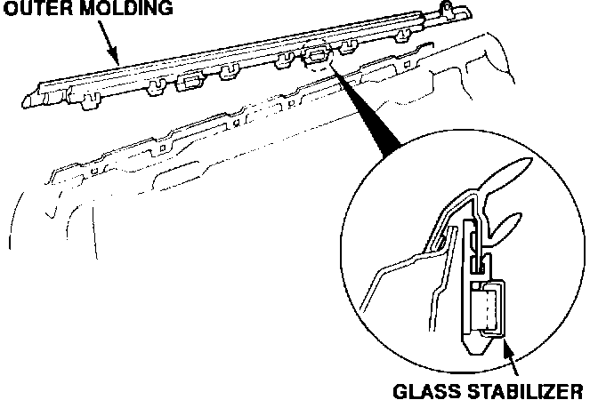

Front Door Glass - Vertical Scratches
91acura02
February 11, 1991
BULLETIN NO
91-004
YEAR MODEL VIN APPLICATION
'90-91 INTEGRA See Vehicles
Affected
Vertical Scratches on Front Door Glass
SYMPTOM
The front door glass is scratched vertically in two places, in line with the glass stabilizer pads.
PROBABLE CAUSE
The fiber pads on the outer glass stabilizers are contaminated with dirt or other grit.
VEHICLES AFFECTED
'90 Integra 3-door through
JH4DA9 ... LS071062
'90-91 Integra 4-door through
JH4DB1 ... MS000012

CORRECTIVE ACTION
Replace the scratched door glass and install the new-type outer glass stabilizers listed under PARTS INFORMATION.
1. Remove the door glass as described in the Body section of the service manual.
2. Replace the original outer glass stabilizers with the new-type stabilizers.
3. Install a new door glass and reassemble the door.
PARTS INFORMATION
3-door:
Outer Glass Stabilizer:
P/N 72411-SK7-003 (two per door)
Door Glass Assembly
Right: P/N 73300-SK7-0000
Left: P/N 73350-SK7-0000
4-door:
Outer Glass Stabilizer:
P/N 72411-SK8-023 (one per door)
Door Glass Assembly
Right front: P/N 73300-SK8-0000
Left front: P/N 73350-SK8-0000
WARRANTY CLAIM INFORMATION
In warranty: The normal warranty applies. Out-of-warranty: Any repair performed after warranty expiration may be eligible for goodwill consideration by the District Service Manager. You must request consideration, and get the DSM's decision, before starting work.
Operation number: Left front - 824180
Right front - 825180
Flat rate time: 0.9 hour
Failed P/N: 71411-SK7-003
Defect code: 019
Contention code: A01